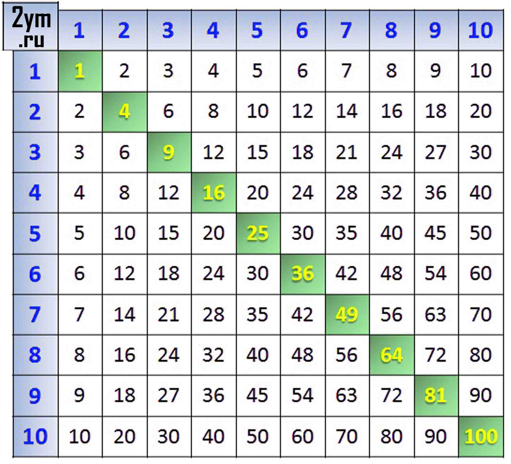

Как выучить таблицу
умножения
Память это одно из свойств нервной системы, со способностью какое-то время сохранять информацию о событиях внешнего мира. Хранение в кратковременной памяти имеет ограниченную емкость, информация будет доступной короткое время и не долго. Например, телефонный номер может быть забыт через несколько секунд . Долговременная память может хранить гораздо большее количество информации на протяжении всей жизни. Поэтому для запоминания таблицы умножения нам понадобится долговременная память и время.
Распечатайте нашу таблицу умножения и обязательно повешайте ее на стену в видное место: 
Начинайте обучение со счета десяток, пятерок, четверок, двоек. Дети начинают понимать, что 20, например, это две десятки (10+10), четыре пятерки или пять четверок, десять двоек (2+2+2+2+2+2+2+2+2+2). При заучивании таблицы такое понимание пригодится.
Продолжите учить таблицу умножения с умножения на единицу 1 и на 10. Все люди быстро усваивают, что при умножении на 1 число не меняется, а при умножении на 10 – увеличивается десятикратно, и чтобы получить результат, нужно к первому множителю приписать 0, а детям данный подход позволяет понять принцип действия.
Умножение одинаковых чисел. Запомнить легко, если вспомнить сложение двух одинаковых чисел: 2+2, 3+3+3 и так далее.
Умножение на 11 простых однозначных чисел. Применяется как и при умножении на 10, помогая детям усвоить принцип. Умножаемое однозначное число на 11 в этом случае дублируется.
11 × 1 = 11
11 × 2 = 22
11 × 3 = 33
11 × 4 = 44
11 × 5 = 55
11 × 6 = 66
11 × 7 = 77
11 × 8 = 88
11 × 9 = 99
Умножение на 5. Обратите внимание школьника на то, что результат умножения на это число всегда заканчивается на 5 или 0. Если умножение на четное число, то в результате число заканчивается на 0, если на нечетное, то на 5-ть.
Обязательное закрепление. Повторение должно проходить в игровой форме, чтобы обучение стало более эффективным. Приготовьте листы бумаги с уравнениями без ответов, в виде карточек. Дети по очереди, как на экзамене, достают несколько карточек. Кто быстрее напишет верные ответы, тот должен получать приятный сюрприз. Как правило, большинство детей успешно осваивают таблицу при поддержке родителей. Кто быстро считает - тот быстро думает.
Если вы хотите выглядеть соображающим умным человеком, дополнительно выучите таблицу до 20-ти. В этом случае изучение поможет вам и вашим детям, кроме того, вы сможете играть в игру вместе с ребенком. И помните, что совершенству нет предела.